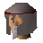
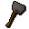
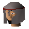

Guard

| Config name | death_guard2 |
| NPC id | 1077 |
| Combat level | 37 |
| Hitpoints | 40 |
| Attack / Strength / Defence | 30 / 30 / 30 |
| Options | Talk-to, Attack |
| Category | death_guard |
| Wander range | 0 tiles from spawn |
| Max range | 5 tiles from spawn |
| Defined in | scripts/quests/quest_death/configs/quest_death.npc |
| Bonuses | Attack bonus 18, Strength bonus 16, Stab def 36, Slash def 48, Crush def 50, Magic def -4, Range def 38 |
Guard
A Burthorpe Castle guard.
Show all 1 spawn on the world map → Open in knowledge graph →
Drops
Drop script: scripts/areas/area_burthorpe/scripts/death_guard.rs2 (category handler _death_guard)
Always dropped
| Item | Quantity | Rarity | Notes |
|---|---|---|---|
 Steel warhammer | 1 | Always |
Tertiary drops
| Item | Quantity | Rarity | Notes |
|---|---|---|---|
| Clue scroll (medium) | 1 | 1/128 (0.78%) | members |
Locations
| Area | Coordinates | Level | Count | Map |
|---|---|---|---|---|
| Burthorpe | 2900, 3556 | 0 | 1 | view |
Related NPCs (category death_guard)

Guard